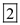
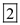
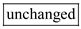
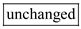

Step 1:
Write the formula for current flowing through the induced n channel.
Here,
 is the mobility of the electrons at the surface of the channel
is the mobility of the electrons at the surface of the channel
is the oxide capacitance
 is the width to length ratio of the channel
is the width to length ratio of the channel
 is the gate-to-source voltage
is the gate-to-source voltage
 is the drain-to-source voltage
is the drain-to-source voltage
 is the threshold voltage
is the threshold voltage
The oxide thickness indicates the electrical insulating capacity between the source and drain regions.
For small  , the channel behaves as a linear resistance.
, the channel behaves as a linear resistance.
The linear resistance is,
Substitute  for .
for .
Here,
 is the overdrive voltage
is the overdrive voltage
Step 2:
(a)
When is doubled, say , the new linear resistance is,
Thus, when is doubled, the linear resistance  is halved.
is halved.
Hence, the resistance  is reduced by a factor of
is reduced by a factor of  .
.
Step 3:
(b)
When the width W is doubled, the new linear resistance is,
Thus, when W is doubled, the linear resistance  is halved.
is halved.
Hence, the resistance  is reduced by a factor of .
is reduced by a factor of .
Step 4:
(c)
When both the width W and the Length L are doubled, the new linear resistance is,
Thus, there is no change in the resistance  when both L and W are doubled.
when both L and W are doubled.
Hence, the resistance  remains .
remains .
Step 5:
(d)
The oxide capacitance in terms of oxide thickness is,
Here,
 is the permittivity of silicon dioxide
is the permittivity of silicon dioxide
is the oxide thickness
When oxide thickness is halved, the oxide capacitance becomes doubled.
Step 6:
When both the width
W and the Length
L are halved, and the oxide thickness is halved, the new linear resistance is,
Thus, when the oxide thickness is halved, the linear resistance  is halved.
is halved.
Hence, the resistance  is reduced by a factor of .
is reduced by a factor of .